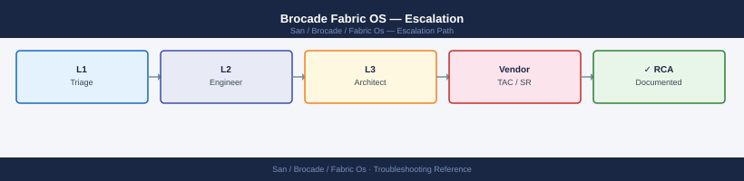
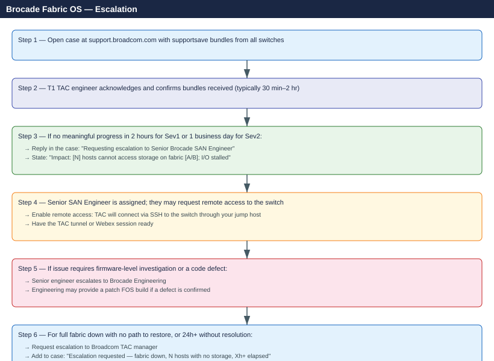

Brocade Fabric OS — Escalation¶

Before you begin¶
- Access required: SSH access to each Brocade switch (admin credentials); Broadcom support account with the switch serial numbers registered
- Do this first: collect supportsave from ALL affected switches before touching anything. TAC will ask for it in their first response
- Enforce a change freeze: no zoning changes, no FOS upgrades, no port disabling during the incident. Every change adds a variable and delays diagnosis
- Do NOT reboot any switch unless Broadcom TAC explicitly instructs you to — reboots may break fabric stability and overwrite critical log data
Pre-Escalation Self-Check¶
Run these from each switch's SSH session before opening the case.
| Check | Command | Expected result |
|---|---|---|
| FOS version | version |
Note full version string (e.g. v9.2.1d) |
| Switch health | switchstatusshow |
All LEDs/ports green; status HEALTHY |
| Fabric status | fabricshow |
All expected switches present; no unknown domains |
| ISL status | islshow |
All ISLs show state Up |
| Port errors | porterrshow |
No ports with high CRC, loss-of-sync, or loss-of-signal counts |
| Zone config active | cfgshow |
Active zone config matches expected baseline |
| Recent errors | errshow |
Review last 20 entries for hardware faults or segmentation events |
| Principal switch | fabricshow |
Only one principal switch per fabric; Domain ID stable |
Step-by-Step Data Collection¶
Run on each affected Brocade switch. SSH as admin.
1. Get the FOS version and switch serial number¶
# FOS version — include in TAC case description
version
# Switch information — chassis model + serial number
switchshow | head -20
# For the full chassis serial number (required to open TAC case)
chassisshow | grep -i serial
FOS v9.1.0b
Fabric OS v9.1.0b
Switch State: Online
Switch Mode: Native
Switch Role: Principal
Switch Domain: 1
Switch Name: brocade-switch-01
Switch WWN: 10:00:00:27:f1:5a:bc:d0
Enet IP Addr: 192.168.1.100
FC Port Count: 16
FC Port Speed: 16Gb
Health Status: OK
Chassis WWN: 10:00:00:27:f1:5a:bc:d0
Chassis Name: brocade-switch-01
Chassis Model: Brocade G630
Chassis Serial: SN-BR-G630-0847291
Fabric ID: 128
...
Chassis Serial Number: SN-BR-G630-0847291
Common errors
switchshow: command not found — Ensure you are logged into the Brocade switch via SSH/Telnet, not your local workstation; these commands run on the switch itself.
Permission denied — Verify your user account has admin privileges on the switch; use userconfig --show to check your role.
2. Capture fabric state (before anything changes)¶
# Full fabric topology — shows all switches, domain IDs, and ISLs
fabricshow
# Zone configuration — active and saved databases
cfgshow
# ISL state — all inter-switch links
islshow
# Port-level error counters — look for CRC, loss-sync, loss-sig
porterrshow
Switch Name: fabric-switch-01
Switch Domain ID: 1
Switch IP Address: 192.168.1.10
Switch Model: Brocade 6510
Switch Firmware: v8.2.1b
Switch Status: Online
Fabric Members:
Domain 1: fabric-switch-01 (192.168.1.10)
Domain 2: fabric-switch-02 (192.168.1.11)
Domain 3: fabric-switch-03 (192.168.1.12)
ISL Ports:
Port 0/24: fabric-switch-01 to fabric-switch-02 (Online)
Port 0/25: fabric-switch-01 to fabric-switch-03 (Online)
Port 1/24: fabric-switch-02 to fabric-switch-03 (Online)
Current configuration: cfg_prod
Defined zones: 25
Active zones: 25
Port Error Summary:
Port 0/1: CRC=0, Loss-Sync=0, Loss-Sig=0
Port 0/2: CRC=2, Loss-Sync=0, Loss-Sig=0
Port 0/15: CRC=0, Loss-Sync=1, Loss-Sig=0
Port 1/8: CRC=15, Loss-Sync=3, Loss-Sig=1
...
Common errors
fabricshow: command not found — Verify you are logged into the Brocade switch CLI (not the host OS) by checking the prompt shows switch> or switch#.
Access denied: insufficient privileges — Ensure your user account has admin or read-only permissions; use userconfig --show to verify role assignments.
ISL port offline or isolated — Check physical cable connections and run portshow <port> to diagnose link state; verify switch firmware versions match across the fabric.
Copy the full output of each command into a text file. Paste this into the TAC case description — it gives TAC an immediate view of the fabric state at the time of the issue.
3. Run supportsave on each affected switch (takes 2–5 minutes per switch)¶
# Configure the SCP destination first (do this once per switch)
ssave --scp <username>@<scp-server-ip>:<path>
# Run supportsave — generates a full diagnostic archive
supportsave
# The archive is transferred automatically to the SCP destination
# It includes: running config, all logs, zone database, port stats, SNMP history
Preparing support save archive...
Collecting system information...
Collecting configuration data...
Collecting log files...
Collecting zone database...
Collecting port statistics...
Collecting SNMP history...
Creating archive: support_sw-fcswitch01_20240115_143022.tar.gz
Archive size: 287 MB
Transferring to scp-server.corp.local:/backups/fabric-logs/
Transfer complete: support_sw-fcswitch01_20240115_143022.tar.gz
Archive stored at: /backups/fabric-logs/support_sw-fcswitch01_20240115_143022.tar.gz
Common errors
Permission denied (publickey,password). — Verify SSH credentials and that the SCP server's SSH key is configured with ssave --scp <username>@<scp-server-ip>:<path> using a valid user account.
No space left on device — Check available disk space on the SCP destination with df -h and ensure at least 500 MB is free, or configure an alternate SCP path.
Connection refused — Confirm the SCP server is reachable and SSH is running on port 22 by testing with ping <scp-server-ip> and telnet <scp-server-ip> 22 from the switch.
Run supportsave on every switch in the affected fabric, not just the one that appears to be the source. Fabric issues often show on the downstream switch, not the root cause switch.
4. Capture the error log (timeline of events)¶
# Switch event log — last 100 entries; paste into TAC case
errshow | head -100
# For long-running incidents, save the full errshow to a file
errshow > /tmp/errshow-$(hostname)-$(date +%Y%m%d).txt
Error Log ID: 0x000001a2 | Severity: INFORMATIONAL | Time: 2024-01-15 14:32:18 UTC
Message: Port 0/1 link up at 16Gbps
Source: portLogicalModule
Error Log ID: 0x000001a1 | Severity: WARNING | Time: 2024-01-15 14:28:45 UTC
Message: Temperature sensor reading 62°C (threshold: 70°C)
Source: environmentalMonitoring
Error Log ID: 0x000001a0 | Severity: INFORMATIONAL | Time: 2024-01-15 14:15:22 UTC
Message: Fabric reconfiguration completed successfully
Source: fabricManager
Error Log ID: 0x0000019f | Severity: CRITICAL | Time: 2024-01-15 13:52:10 UTC
Message: Port 1/3 link down - signal loss detected
Source: portLogicalModule
Error Log ID: 0x0000019e | Severity: WARNING | Time: 2024-01-15 13:48:33 UTC
Message: SFP module temperature elevated on port 2/5
Source: sfpMonitoring
Error Log ID: 0x0000019d | Severity: INFORMATIONAL | Time: 2024-01-15 13:30:15 UTC
Message: Configuration backup completed to remote server 10.50.12.8
Source: configManager
...
(94 additional entries)
/tmp/errshow-switch-prod-01-20240115.txt
Common errors
errshow: command not found — Verify you are logged into a Brocade Fabric OS switch (not a Linux host); this command only exists on switch CLI.
Permission denied — Ensure your user account has administrative privileges; request admin role assignment from the fabric administrator.
5. Write the timeline¶
FOS version: v9.2.1d build 2023120
Switch affected: brocade-core-01.corp.local (Domain ID 1)
Switch serial: BRCxxxxxxx (from chassisshow)
Fabric: Fabric A (two-switch core-edge)
Issue first observed: 2026-06-14 14:30 UTC
Last known good state: 2026-06-14 09:00 UTC
Changes in the 24h before the issue:
- 09:00: Firmware upgrade FOS 9.2.0 → 9.2.1d applied to brocade-edge-02
- 14:25: brocade-core-01 reported "ISL E-Port Isolated" on port 16
- 14:30: 12 hosts lost access to storage on fabric A
Steps already taken:
- fabricshow: brocade-edge-02 now shows as unknown domain (not in fabric)
- ISL between core-01 port 16 and edge-02 port 0 is now disabled (zoning conflict)
- Did NOT change any zone configuration or reboot switches
Blast radius: 12 hosts on fabric A cannot see storage; VMs on those hosts have I/O stalled
How to Open the Case on Broadcom Support Portal¶
-
Go to support.broadcom.com and sign in with your Broadcom account. If you do not have one: click Register and use your company email — your switch serial numbers must be registered under your account for entitlement.
-
Click Open a New Case in the top navigation.
-
Under Select Product Family, choose Brocade → Brocade Fibre Channel Switches.
-
Under Product, select your switch model (e.g. Brocade G720, Brocade X7).
-
Under Serial Number, enter the chassis serial number from
chassisshow. This is required to validate your support entitlement. -
Under Severity, select:
- Severity 1 — Critical: Fabric completely down; all hosts on this fabric cannot access storage; VMs have I/O stalled; production outage; no workaround
- Severity 2 — High: Partial fabric degradation; some hosts affected; ISLs down but alternate paths still exist; production impact with temporary workaround
- Severity 3 — Medium: Single switch or port issue; fabric topology intact; no immediate data path loss
-
Severity 4 — Low: How-to question, pre-upgrade planning, or non-urgent configuration review
-
In the Summary field: switch model + symptom + scope. Example:
Brocade G720 core-01 Domain 1 — ISL isolated after FOS 9.2.1d upgrade; 12 hosts lost fabric-A storage access at 14:30 UTC. -
In the Description field, paste:
- FOS version and switch serial from Step 1
- fabricshow output showing the isolation
- errshow output around the time of failure
- The timeline from Step 5
-
What you have already tried
-
Under Attachments, upload:
- The supportsave archive from each affected switch (one ZIP per switch)
-
The errshow text file from Step 4
-
Click Submit. You will receive a case number by email immediately.
-
Severity 1 only: call Broadcom TAC after submission:
- Find the number for your region at support.broadcom.com → Contact Support
- State "Severity 1 — fabric down, hosts have no storage access" at the start of the call.
- Have the case number and switch serial number ready.
Escalation Path¶

What NOT to Do¶
| Do NOT do this | Why | What to do instead |
|---|---|---|
| Change or commit zone configuration during investigation | Changes enforcement state; makes TAC diagnosis harder | Freeze all zone changes until TAC gives explicit go-ahead |
| Reboot the principal switch during an active incident | Can cause domain ID conflicts and worsen fabric stability | Only reboot if TAC says it is safe and has seen the current supportsave |
| Replace SFPs or ISL cables without TAC guidance | The fault may be in switch firmware, not hardware | Let TAC confirm the hardware is the root cause first |
| Upgrade FOS during the incident | Adds variables; may not fix the issue; can worsen state | Only upgrade FOS if TAC confirms it is the fix and provides the build |
| Disable and re-enable ISL ports randomly | Can trigger additional segmentation events | Follow TAC's specific port sequence |
| Remove switches from the fabric manually | Loses diagnostic data from those switches | Keep all switches connected; let TAC analyse the full topology |
Useful Commands for Case Updates¶
Paste these into case replies to show TAC the current state.
# Fabric topology (paste after every significant change or update)
fabricshow
# ISL state
islshow
# Port state with speed and status
switchshow
# Error log snapshot
errshow | head -50
# Port error counters (flag any high CRC or loss-of-sync)
porterrshow
# Zone config — confirm active config name
cfgshow | grep -E "cfg:|Defined|Effective"
# SNMP trap history (shows hardware events)
snmpconfig --show
# Firmware revision
version
Expected outputSwitch Name: brocade-switch-01
Switch State: Online
Fabric ID: 100
FC Address ID: 010000
Fabric Parameters (Max R_A_TOV): 32 seconds
Connection Parameters (E_D_TOV): 2 seconds
Ports: 16
PortName PortType State Proto Connected PortWWN
0 F-Port Online FC-4 host-01 50:00:09:73:a1:20:00:01
1 F-Port Online FC-4 host-02 50:00:09:73:a1:20:00:02
2 E-Port Online FC-4 switch-02 50:00:09:73:a1:20:00:03
3 F-Port Online FC-4 storage 50:00:09:73:a1:20:00:04
4-15 F-Port Offline - - -
ISL Port List:
Port 2 (brocade-switch-01) <-> Port 2 (brocade-switch-02)
Port 3 (brocade-switch-01) <-> Port 3 (brocade-switch-02)
Port Status and Counters:
Port 0: Online, Speed: 16Gb, State: Enabled, Frames: 1,234,567
Port 1: Online, Speed: 16Gb, State: Enabled, Frames: 987,654
Port 2: Online, Speed: 16Gb, State: Enabled, Frames: 2,456,789
Port 3: Online, Speed: 16Gb, State: Enabled, Frames: 654,321
Port 4-15: Offline
Error Log (last 50 entries):
[2024-01-15 14:32:10] Port 0: Link up
[2024-01-15 14:31:45] Port 1: Link up
[2024-01-15 14:25:12] Fan module 1: Status OK
[2024-01-15 14:20:33] Temperature sensor: 42°C (Normal)
[2024-01-15 13:45:22] Port 2: ISL established
[2024-01-15 13:44:55] Port 3: ISL established
Port Error Counters:
Port 0: CRC: 0, Loss-of-Sync: 0, Timeout: 0
Port 1: CRC: 0, Loss-of-Sync: 0, Timeout: 0
Port 2: CRC: 0, Loss-of-Sync: 0, Timeout: 0
Port 3: CRC: 0, Loss-of-Sync: 0, Timeout: 0
cfg: prod_config
Defined configurations:
prod_config
test_config
Effective configuration:
prod_config
SNMP Trap History:
Trap ID: 1001, Type: linkUp, Port: 0, Timestamp: 2024-01-15 14:32:10
Trap ID: 1002, Type: linkUp, Port: 1, Timestamp: 2024-01-15 14:31:45
Trap ID: 1003, Type:
¶
Switch Name: brocade-switch-01
Switch State: Online
Fabric ID: 100
FC Address ID: 010000
Fabric Parameters (Max R_A_TOV): 32 seconds
Connection Parameters (E_D_TOV): 2 seconds
Ports: 16
PortName PortType State Proto Connected PortWWN
0 F-Port Online FC-4 host-01 50:00:09:73:a1:20:00:01
1 F-Port Online FC-4 host-02 50:00:09:73:a1:20:00:02
2 E-Port Online FC-4 switch-02 50:00:09:73:a1:20:00:03
3 F-Port Online FC-4 storage 50:00:09:73:a1:20:00:04
4-15 F-Port Offline - - -
ISL Port List:
Port 2 (brocade-switch-01) <-> Port 2 (brocade-switch-02)
Port 3 (brocade-switch-01) <-> Port 3 (brocade-switch-02)
Port Status and Counters:
Port 0: Online, Speed: 16Gb, State: Enabled, Frames: 1,234,567
Port 1: Online, Speed: 16Gb, State: Enabled, Frames: 987,654
Port 2: Online, Speed: 16Gb, State: Enabled, Frames: 2,456,789
Port 3: Online, Speed: 16Gb, State: Enabled, Frames: 654,321
Port 4-15: Offline
Error Log (last 50 entries):
[2024-01-15 14:32:10] Port 0: Link up
[2024-01-15 14:31:45] Port 1: Link up
[2024-01-15 14:25:12] Fan module 1: Status OK
[2024-01-15 14:20:33] Temperature sensor: 42°C (Normal)
[2024-01-15 13:45:22] Port 2: ISL established
[2024-01-15 13:44:55] Port 3: ISL established
Port Error Counters:
Port 0: CRC: 0, Loss-of-Sync: 0, Timeout: 0
Port 1: CRC: 0, Loss-of-Sync: 0, Timeout: 0
Port 2: CRC: 0, Loss-of-Sync: 0, Timeout: 0
Port 3: CRC: 0, Loss-of-Sync: 0, Timeout: 0
cfg: prod_config
Defined configurations:
prod_config
test_config
Effective configuration:
prod_config
SNMP Trap History:
Trap ID: 1001, Type: linkUp, Port: 0, Timestamp: 2024-01-15 14:32:10
Trap ID: 1002, Type: linkUp, Port: 1, Timestamp: 2024-01-15 14:31:45
Trap ID: 1003, Type:
Support Tiers and SLA Reference¶
| Severity | Definition | Initial Response SLA |
|---|---|---|
| Sev 1 — Critical | Fabric down; all hosts without storage; production outage | 30 minutes (24×7) |
| Sev 2 — High | Partial fabric degradation; alternate paths exist | 4 hours |
| Sev 3 — Medium | Single switch/port issue; no I/O impact | 1 business day |
| Sev 4 — Low | How-to, planning, non-urgent configuration | 2 business days |
See also¶
Verify resolution¶
- Run
fabricshowand confirm all expected switches appear with correct domain IDs - Run
islshowand confirm all ISLs showUp - Run
porterrshowand confirm port error counters are not incrementing - Verify all initiator-target zones are active:
cfgshowshows the expected active config - On the affected hosts: run an I/O test (e.g.
dd if=/dev/sdb bs=1M count=100 of=/dev/null) and confirm storage is accessible - Monitor
errshowfor 15 minutes and confirm no new fabric isolation or port fault events